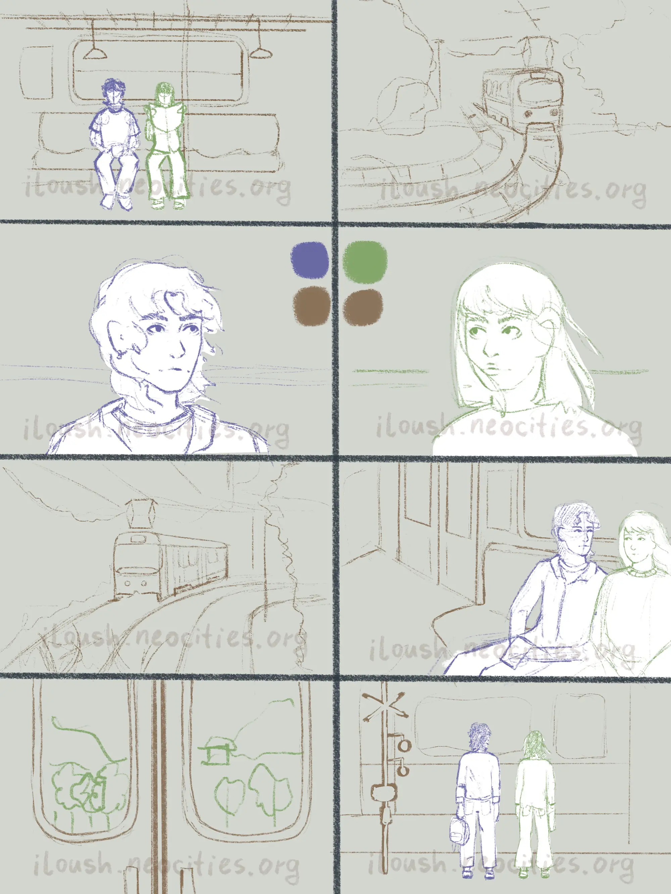
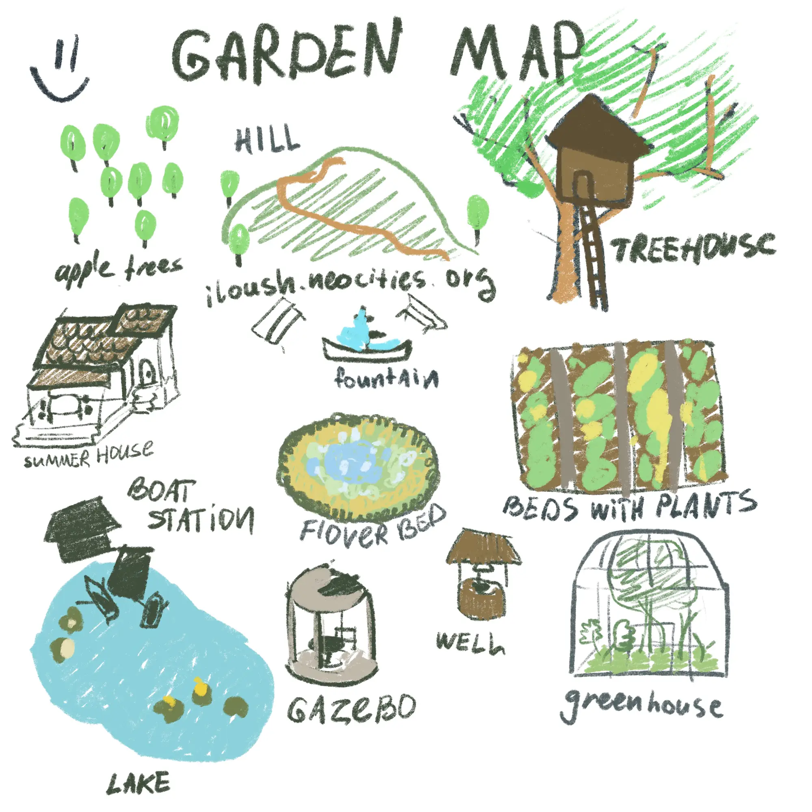
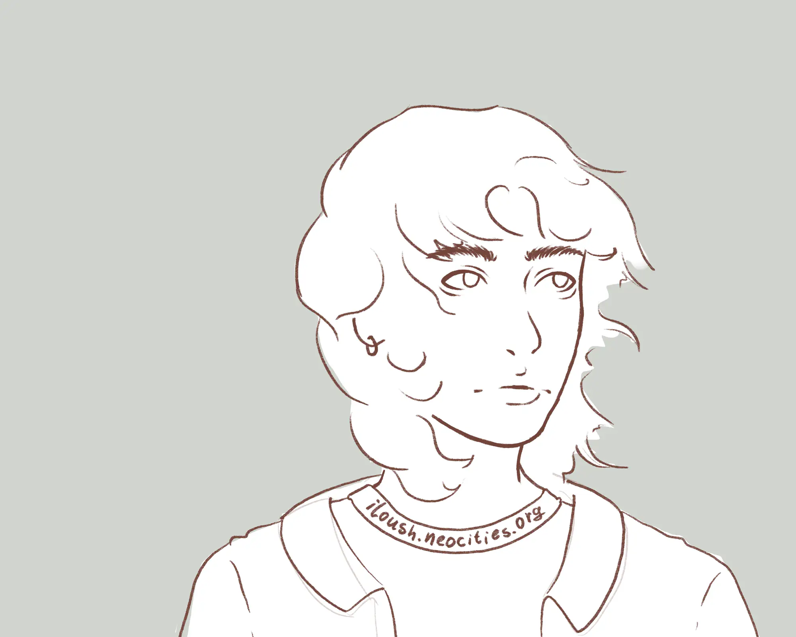
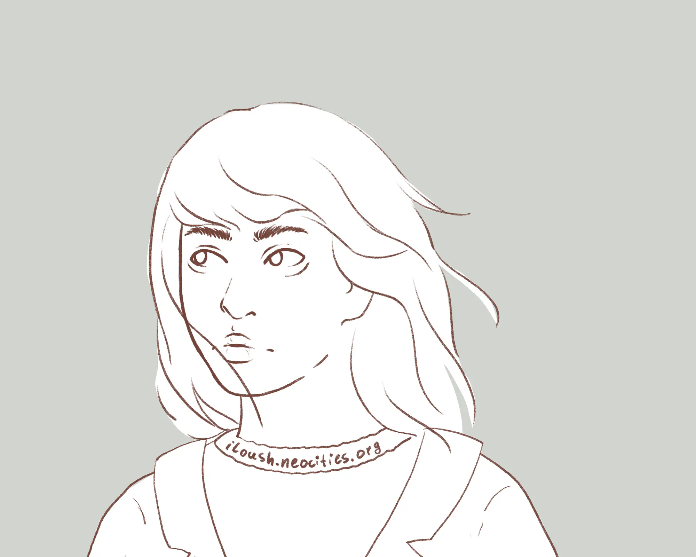
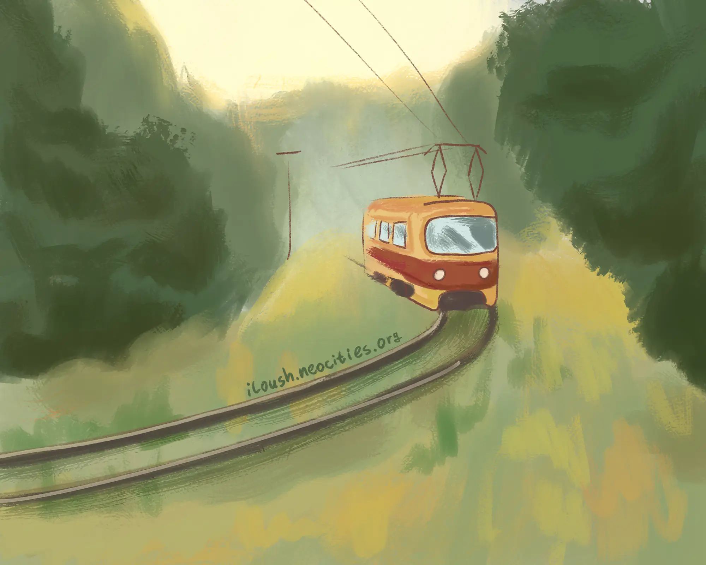
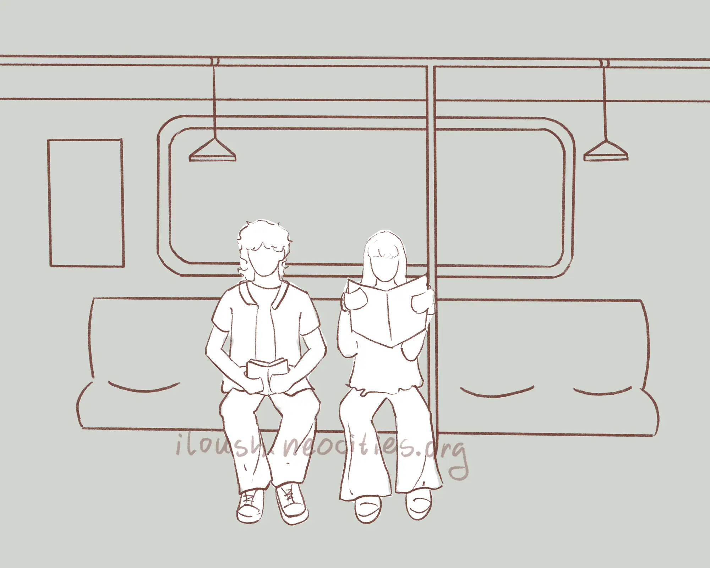
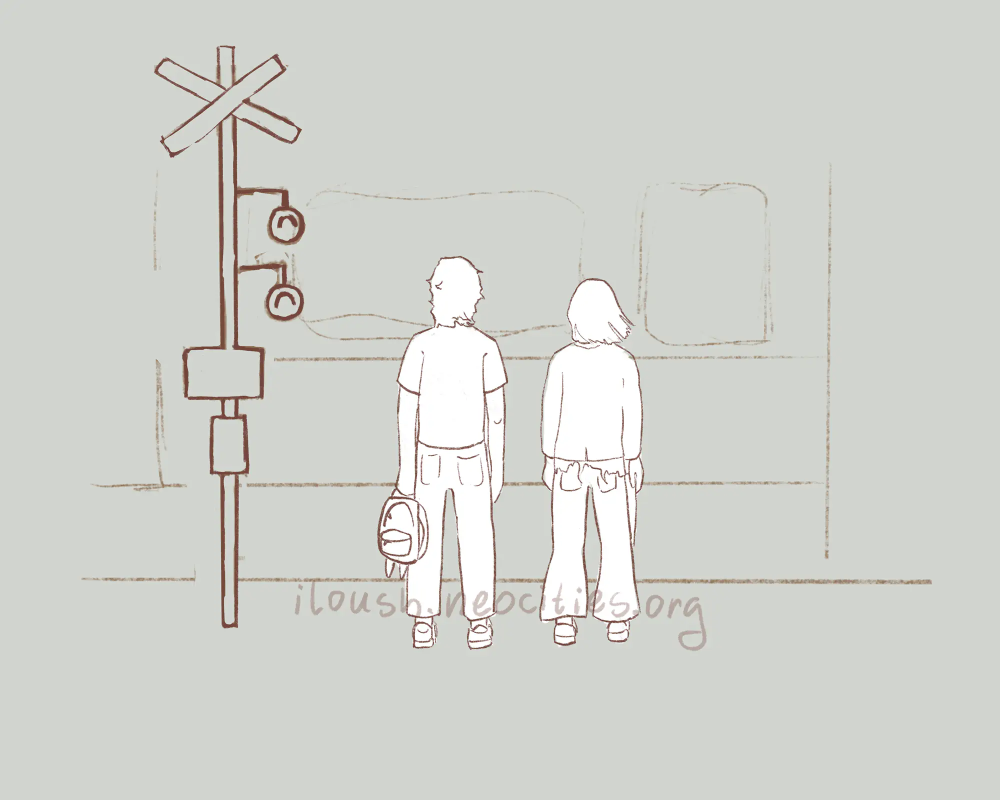

Hi there!
I've entered the Petapixel indie web contest! I'm really excited — and I want to make my site even cooler before submissions begin.
My idea is to create a small comic or a visual-novel-style experience for when you enter the site. Here's my storyboard and some lineart! I'd love to add little animations — like hair swaying in the wind, or a moving train passing by.
First storyboard
Garden map?!
Should it replace the regular navigation bar? I don't think so — but I really want a page with this map!
I loveee this lineart!
Love this one too!
Train in the forest
I'm thinking about the colouring style. This one gives soft oil-painting vibes… Or should I go for flatter colours instead?
In the train. Reading
Train stop
I hope I can draw all of this before the contest. It's one of my biggest projects — and I'm just starting out with animation, learning as I go.
Thank you for being here. Wishing you a soft, quiet day ♡
iloush ♡
The garden is changing. Stay close to see what grows next.